Corpo della forma vs.
comportamento della forma:
la forma che agisce
La forma architettonica non è un oggetto statico, ma un comportamento spaziale. Agisce sul corpo, orienta la luce, costruisce ritmi e tensioni. La sua efficacia risiede meno nella figura e più nel modo in cui organizza lo spazio e induce un’esperienza. Le immagini selezionate rendono evidente come l’identità di una forma risieda nel suo modo di agire, più che nella sua apparenza.

- Il vuoto centrale attira lo sguardo,
- l’asse d’acqua orienta il corpo verso l’orizzonte,
- i volumi simmetrici comprimono e dirigono,
- la luce costruisce una profondità assoluta.
Nel Salk Institute, il grande cortile centrale non è semplicemente uno spazio di distribuzione: è il vero “cuore disciplinare” del complesso, un luogo di sospensione percettiva in cui architettura, luce e paesaggio si integrano in una forma di conoscenza silenziosa. La sua forza risiede nel fatto che Kahn rinuncia volontariamente a ogni decorazione e riduce lo spazio a poche decisioni fondamentali: due ali simmetriche, un piano orizzontale di travertino, la linea sottile dell’acqua, il vuoto dell’orizzonte.
L’asse d’acqua, che scorre al centro del cortile, agisce come una tensione direzionale che orienta il corpo e lo sguardo verso l’oceano. Non è un elemento ornamentale: è la traduzione fisica dell’idea di “ordine” che attraversa l’intero progetto. La lama d’acqua rende percepibile il rapporto tra gravità e luce, tra movimento e immobilità, tra il gesto misurato dell’uomo e l’indeterminazione del paesaggio. Essa diventa così uno strumento conoscitivo, un dispositivo che permette di leggere la profondità dello spazio attraverso un’azione minima e continua: lo scorrere.
Il cortile assume un carattere quasi sacro: è uno spazio che invita alla contemplazione, ma anche al lavoro intellettuale. Jonas Salk aveva chiesto a Kahn un edificio “che ispirasse grandi idee”: la risposta è un luogo che non mostra nulla di superfluo, ma fa emergere la presenza del tempo attraverso il mutare delle ombre, la variazione della luce e la vibrazione dell’acqua. L’architettura non compete con il paesaggio: lo incornicia, lo misura e lo rende esperienza.
In questo modo Kahn riesce a creare una proporzione tra l’uomo e l’infinito: il cortile è uno spazio disciplinare, ma l’orizzonte aperto introduce una dimensione che supera la funzione dell’edificio. La sua grandezza sta nel far convivere ordine e vastità, rigore costruttivo e apertura poetica.
Il Salk Institute non propone una forma da abitare, ma una condizione da percepire: la consapevolezza che l’architettura può essere essenziale e al tempo stesso intensa, materica e metafisica. In questo equilibrio, l’asse d’acqua diventa il segno più puro della poetica di Kahn: un gesto minimo che contiene l’immensità.

- i tagli di luce disegnano piani invisibili,
- i dettagli orientano il movimento,
- la soglia crea un ritmo interno,
- le superfici non “ornano”: agiscono.
L’intervento di Carlo Scarpa per l’ampliamento della Gypsotheca Canoviana (1955-1957) rappresenta un caso esemplare di come l’architettura possa nascere da un ascolto percettivo del luogo e dell’opera. L’ampliamento non è un semplice contenitore museale, ma un dispositivo spaziale in cui luce, materia, soglia e percorso diventano strumenti per ricostruire il senso delle sculture di Canova. Scarpa lavora su tre principi fondamentali — tutti centrali nella nostra lezione:
- La luce come struttura dello spazio La luce naturale entra da tagli, vetrate angolari, aperture calibrate: non illumina genericamente, ma costruisce gerarchie, ritmi, campi percettivi. Le sculture non sono viste “in vetrina”, ma emergono da quadri d’ombra e riflessi che mutano durante il giorno: lo spazio diventa evento, non cornice.
- La relazione con l’esistente e il paesaggio L’ala di Scarpa non contrappone nuovo e antico: li mette in relazione. Il nuovo volume dialoga con la gipsoteca ottocentesca e con il paesaggio di Possagno attraverso proporzioni misurate, continuità materiche e un rapporto calibrato con la luce. La sua architettura introduce una nuova lettura dell’edificio originario, senza alterarne l'identità.
- Il museo come esperienza, non come contenitore Il percorso è costruito come una sequenza di soglie, variazioni di luce, compressioni e aperture: chi attraversa lo spazio non “guarda” soltanto, ma vive lo spazio. L’architettura guida il corpo, organizza i tempi della percezione, crea una relazione dinamica con le sculture — rese ancora più vive dallo specchio d’acqua che ne moltiplica le forme e introduce una dimensione atmosferica.
- lo spazio architettonico nasce dalla luce, non dalla forma;
- la percezione è il vero materiale del progetto;
- la soglia è un dispositivo che trasforma il comportamento dello spazio;
- la relazione con l’esistente non è imitazione, ma interpretazione;
- il progetto costruisce un’esperienza, non un contenitore funzionale.

- agisce,
- pesa,
- sporge,
- comprime il vuoto sottostante,
- orienta il movimento,
- modifica la luce.
Una massa sospesa come dispositivo percettivo
Il Tagus Pavilion di João Luís Carrilho da Graça è uno degli esempi più radicali dell’architettura portoghese contemporanea, non per un gesto formale evidente, ma per la riduzione estrema dei mezzi con cui costruisce una condizione spaziale di forte intensità percettiva.
L’elemento più iconico, la grande lastra di cemento sospesa, non funziona come un tetto né come una pensilina nel senso tradizionale: è un campo di forze che definisce lo spazio sottostante attraverso il suo peso visivo, la sua ombra, il suo rapporto con il vuoto. La forma non rappresenta nulla, non allude a modelli noti; agisce, semplicemente. È un dispositivo che attiva lo spazio e costringe il corpo del visitatore a percepire la relazione tra massa e vuoto, tra gravità e leggerezza.
Carrilho da Graça costruisce così una soglia atmosferica, uno spazio intermedio che non appartiene né all’interno né all’esterno. La pensilina sospesa produce una tensione costante: sembra gravare sul terreno ma allo stesso tempo galleggiare grazie alla luce che scorre lungo i suoi margini. Questa ambiguità è intenzionale e decisiva: il padiglione non cerca equilibrio statico, ma una condizione percettiva in bilico, che il visitatore deve leggere con il proprio corpo.
L’essenzialità materica — superfici bianche, geometrie elementari, assenza di segni superflui — rende lo spazio una sorta di evento fenomenologico: ciò che conta non è l’oggetto costruito, ma ciò che accade tra il costruito e chi lo attraversa. È un’architettura che mira a produrre esperienza, non immagine; intensità, non decorazione.
Nel contesto dell’Expo ’98, dove molti padiglioni puntavano sulla spettacolarità, il Tagus Pavilion afferma una posizione opposta: l’architettura come concentrazione, come sottrazione, come misura del rapporto tra forma e comportamento. In questo senso, l’opera di Carrilho da Graça è una lezione di rigore, equilibrio e attenzione al carattere atmosferico dello spazio.
La sua forza critica sta proprio qui: nel dimostrare che la monumentalità non nasce dalla dimensione, ma dalla precisione con cui lo spazio viene messo in tensione.
Il campo strutturale:
lo spazio come sistema di relazioni interdipendenti
Lo spazio non è un contenitore, ma un campo di forze. Ogni elemento entra in relazione con gli altri, partecipa a un equilibrio complesso fatto di direzioni, polarità, tensioni. La forma non è un volume isolato, ma l’emergere di una struttura condivisa. I progetti scelti mostrano come l’architettura nasca dalla costruzione coerente di un campo interdipendente.
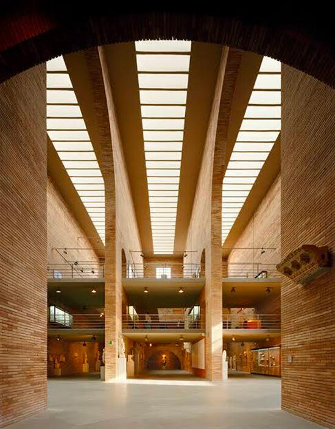
- le grandi pareti in laterizio generano assi longitudinali potentissimi,
- le campate ripetute costruiscono ritmo e profondità,
- la luce zenitale allinea verticalità e movimento,
- il vuoto centrale tiene insieme l’intero sistema.
L’interno del Museo Romano di Mérida è costruito come un campo spaziale unitario: una grande navata a doppia altezza, scandita da pareti longitudinali in laterizio e da una sequenza di archi ripetuti. Questa serialità non ha valore decorativo: organizza la direzione dello spazio, orienta lo sguardo e dà al corpo un chiaro vettore di percorrenza. Il ritmo delle campate costruisce profondità e proporzione, trasformando la navata in un sistema percettivo coerente.
La luce naturale, filtrata da aperture alte e sottili, non illumina semplicemente le opere: definisce il comportamento del vuoto, accentua la verticalità, crea gradienti di intensità che guidano la percezione. La luce diventa una vera struttura interna, capace di stabilire gerarchie e di restituire monumentalità ai reperti.
Un secondo livello museale integra le preesistenze archeologiche in situ. Non come reperti isolati, ma come parte del campo spaziale stesso: variazioni di quota, aperture, affacci rendono i resti romani un elemento che “agisce” nell’architettura contemporanea, mettendo in relazione passato e presente in un’unica continuità.
L’uso del mattone, che avvolge la struttura in cemento, non è citazione storicista: è coerenza materica e costruttiva, un modo per radicare il museo nella tradizione romana reinterpretandola in chiave contemporanea.
Il Museo di Mérida dimostra che la monumentalità non è un fatto formale, ma nasce dalla forza della struttura percettiva: direzione, luce, ritmo, materia e archeologia concorrono a costruire un campo unitario, uno spazio che non espone la storia, ma la fa vivere attraverso la sua struttura.
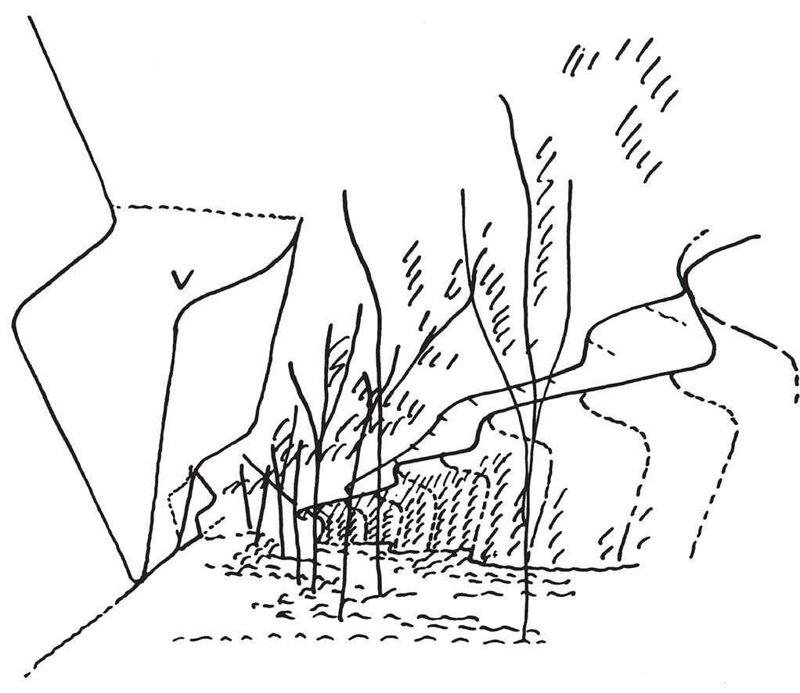
- il percorso in trincea definisce una direzione vettoriale forte,
- i muri inclinati producono tensioni contrapposte,
- il terreno scolpito diventa materia strutturale,
- luce, suolo e geometria si legano in una relazione interdipendente.
Nel Cimitero di Igualada il percorso diventa il vero principio generatore dello spazio. Miralles e Pinós non progettano un cimitero come insieme di oggetti, ma come architettura di suolo, un taglio scavato nella terra che guida il corpo attraverso una discesa lenta, processionale. Il sentiero, sinuoso e inciso nella topografia, è una struttura di percezione: organizza direzioni, compressioni e aperture, modulando il tempo dell’esperienza.
L’architettura non si impone sul paesaggio: si inscrive in esso. Muri inclinati, tagli obliqui, quote che si abbassano e si rialzano costruiscono un campo dinamico in cui ogni elemento risponde alle forze del terreno. La geometria spezzata non è irregolarità formale: è la traduzione spaziale della topografia e del movimento, una sintassi che nasce dal luogo stesso.
La matericità — cemento grezzo, pietra, travi di legno invecchiate — radica il percorso nel ciclo naturale del tempo. L’invecchiamento dei materiali, voluto, fa parte dell’opera: restituisce allo spazio il senso della trasformazione, della finitudine, della continuità tra vita e morte.
La luce, filtrata tra le pareti e riflessa sulle superfici ruvide, non illumina come in un edificio tradizionale: rivela le soglie, marca passaggi, accentua la profondità della trincea o l’apertura improvvisa del cortile finale. È una luce che guida, che misura, che accompagna il cammino più che mettere in risalto forme.
Il risultato è un’opera in cui percorso, suolo, luce e materia sono inseparabili. Lo spazio non si comprende da un punto di vista esterno: si comprende camminando, perché è il movimento a svelarne la struttura. Igualada è uno dei casi più radicali della fine del Novecento in cui il progetto non costruisce un oggetto, ma un campo percettivo — una narrazione silenziosa in cui il paesaggio diventa architettura e l’architettura diventa esperienza del tempo.
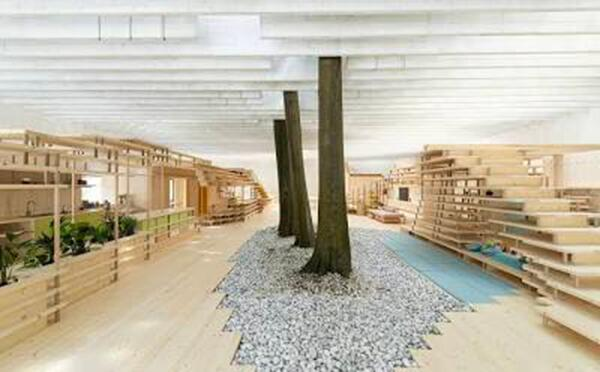
- la griglia di travi in calcestruzzo definisce un campo strutturale continuo,
- gli alberi che attraversano la copertura introducono poli verticali naturali,
- luce e ombra si intrecciano come materia dello spazio,
- le superfici leggere non chiudono, ma organizzano il vuoto.
Una massa sospesa come dispositivo percettivo
La struttura come filtro: un campo luminoso che scioglie il confine tra interno ed esterno
Nel Padiglione Nordico di Venezia, Fehn non costruisce un interno protetto né un padiglione chiuso: costruisce un luogo intermedio, uno spazio percettivo in cui luce, natura e struttura collaborano come parti di un unico campo. La grande griglia di travi sottili in cemento non definisce un volume, ma un filtro: lascia passare la luce, la modula, la diffonde. La copertura diventa così un dispositivo atmosferico che genera una luce omogenea, “senza ombre”, capace di trasformare il vuoto in materia sensibile.
Il gesto più radicale è l’inclusione dei platani preesistenti, che attraversano la copertura e si ergono come colonne viventi. Essi introducono tempo, umidità, stagioni, movimento dell’aria: elementi che dissolvono la distinzione tra architettura e paesaggio. Lo spazio non è più interno né esterno, ma una soglia continua, un ambiente poroso dove la natura diventa parte attiva della struttura.
Le pareti leggere e l’apertura su due lati definiscono uno spazio attraversabile, in cui lo sguardo e il corpo sono liberi di orientarsi senza gerarchie imposte. La materialità — cemento bianco, sabbia chiara, marmo frantumato — potenzia la luminosità diffusa e costruisce un’atmosfera silenziosa, essenziale, profondamente nordica.
Ciò che rende il padiglione un riferimento centrale per la Lezione 4 è il suo modo di intendere lo spazio come campo percettivo: un sistema in cui struttura, luce e natura non sono elementi separati, ma relazioni che si sostengono a vicenda. L’architettura non rappresenta il paesaggio: lo lascia accadere. Non costruisce un volume: costruisce le condizioni per percepire la luce, il vuoto, il passare delle ore. Il Padiglione Nordico è quindi un manifesto della modernità silenziosa di Fehn: un’architettura che rinuncia alla forma come oggetto e afferma la forma come relazione. Un luogo fragile e potentissimo, in cui l’esperienza percettiva non è un effetto ma la vera struttura dello spazio.
La coerenza del campo:
ogni parte dipende dalle altre
Una composizione architettonica è coerente quando ogni sua parte dipende dal tutto. Non esistono elementi neutrali o intercambiabili: ogni gesto modifica l’equilibrio complessivo. Le immagini mettono in luce sistemi in cui la relazione tra le parti è così forte da rendere l’insieme irriducibile e indivisibile, come in un organismo vivente.
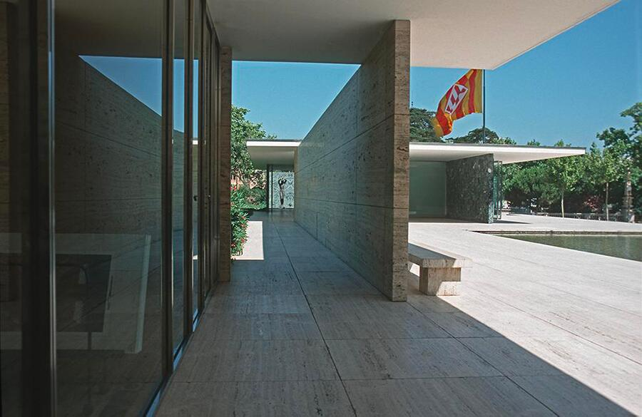
- ogni piano determina la posizione degli altri,
- ogni direzione modifica l’equilibrio complessivo,
- il rapporto vetro–marmo–vuoto è inseparabile,
- togliere un elemento spezzerebbe l’intero sistema.
Il Padiglione di Barcellona è una delle opere che più chiaramente permette di comprendere i temi della lezione 4: lo spazio non come insieme di ambienti chiusi, ma come campo di piani, direzioni e relazioni. Mies e Lilly Reich concepiscono il padiglione come un organismo antimonumentale, in cui la forma non si concentra in un volume ma si disperde nei piani sottili che organizzano il movimento e lo sguardo.
La struttura, sostenuta da otto colonne cruciformi, libera completamente le pareti dalla funzione portante: la pianta diventa un sistema di piani indipendenti, capaci di definire sequenze senza costruire chiusure. I piani verticali – in onice, marmo verde, vetro trasparente o colorato – non delimitano stanze, ma introducono variazioni di direzione, soglie percettive, campi visivi controllati. Sono elementi grammaticali che agiscono come vettori, non come muri.
I piani orizzontali – zoccolo in travertino, copertura a sbalzo, superfici d’acqua – estendono lo spazio oltre il limite fisico. Il pavimento continua verso le terrazze; il tetto sembra fluttuare; le vasche riflettenti creano un piano speculare che raddoppia il campo visivo. L’interno ed esterno smettono così di essere categorie opposte: il padiglione è un ambiente continuo, in cui direzioni e percezioni si prolungano nel paesaggio.
L’uso di materiali riflettenti e traslucidi accentua questa condizione: la statua nella vasca, le colonne riflesse, la fluidità dei vetri rendono incerta la distinzione tra ciò che è costruito e ciò che appartiene allo spazio circostante. Il Padiglione di Barcellona diventa quindi un manifesto della forma non-oggettuale, in cui il progetto consiste nell’ordinare piani e relazioni per generare un campo percettivo unitario, aperto, necessario.
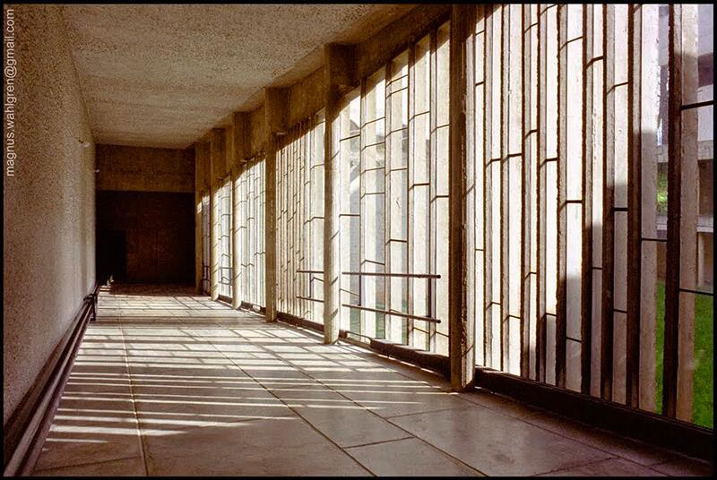
- la luce filtrata,
- le cellule,
- la corte,
- le passerelle,
- il ritmo delle finestre, formano un sistema relazionale indivisibile.
Nel monastero di Sainte-Marie de la Tourette, Le Corbusier trasforma la luce in una vera componente morfologica dello spazio, non come elemento decorativo ma come agente strutturale capace di modellare percorsi, tempi percettivi e stati emotivi.
La luce non “illumina” semplicemente: costruisce lo spazio, ne orienta il comportamento, ne scandisce la sequenza. È in questo senso che La Tourette diventa un caso paradigmatico per la Lezione 4: lo spazio non nasce dagli oggetti, ma dall’azione combinata di piani, profondità, ritmo, tagli e direzioni.
Nei corridoi del chiostro Le Corbusier introduce il sistema dei pans de verre ondulatoires, superfici vetrate scandite da montanti verticali in cemento sviluppate con Iannis Xenakis.
Non sono semplici finestre: sono piani di luce discontinua, con una cadenza irregolare derivata sia dal Modulor sia dalle progressioni musicali di Metastasis. Questa irregolarità calcolata produce:
- un ritmo percettivo, nel quale campi luminosi e zone d’ombra si alternano come battute di una frase architettonica;
- una discontinuità della vista, che spezza la linearità del corridoio e introduce micro-soglie percettive;
- una profondità variabile, data dalla differenza tra luce radente, luce riflessa e luce compressa negli imbotti.
In alcuni casi il colore applicato alle superfici interne — rosso, verde, giallo, blu — trasforma la luce in piano cromatico attivo, producendo variazioni atmosferiche che non imitano la tradizione iconografica ma la reinterpretano attraverso pura esperienza sensibile. Il risultato non è decorativo: è una grammatica luminosa rigorosa che costruisce l’identità dello spazio moderno del sacro.
L’intero complesso mostra un passaggio fondamentale nella ricerca corbusiana: la luce non come fenomeno uniforme, ma come sequenza strutturale, come sistema di variazioni che costruisce la percezione dello spazio nel tempo.
La Tourette non cerca la continuità diffusa dei chiostri storici; cerca invece:
- compressioni e dilatazioni luminose,
- discontinuità ritmiche,
- soglie percettive nette,
- variazioni di intensità che accompagnano la deambulazione.
La Tourette incarna in modo esemplare uno degli argomenti centrali della lezione 4 — la costruzione dello spazio attraverso piani, pieni e vuoti, superfici attive, direzioni, ritmi e soglie — mostrando:
- Piani verticali attivi (pans de verre) che non chiudono, ma articolano la percezione;
- Piani luminosi obliqui (cannoni di luce) che fondano gerarchie e strutture percettive;
- Ritmo come alternanza di luce e ombra;
- Direzione generata dai tagli luminosi e non dalle masse;
- Soglia come variazione luminosa, non come elemento materiale;
- Identità dello spazio costruita dalla luce e non dalla figura;
- Comportamento del corpo determinato dalla sintassi luminosa.
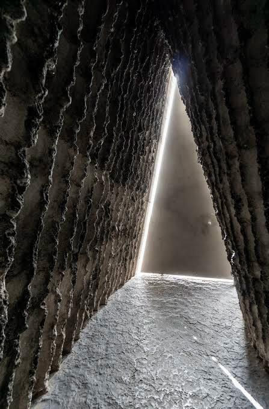
- guscio di calcestruzzo,
- cavità interna scavata dal fuoco,
- apertura zenitale unica,
- superfici concave che indirizzano luce e suono.
La struttura come filtro: un campo luminoso che scioglie il confine tra interno ed esterno
La Cappella Bruder Klaus di Peter Zumthor si offre come un caso emblematico della dialettica tra volume astratto ed interiorità atmosferica.
All’esterno, la cappella appare come un monolite sfaccettato, un prisma rigoroso in calcestruzzo battuto che emerge dal paesaggio agricolo come un’entità autonoma, concentrata, quasi arcaica. L’assenza di aperture e la compattezza materica producono un involucro ermetico che rimanda alla tradizione dei luoghi di ritiro: un “contenitore di vuoto” che trattiene, ma non rivela, la propria natura interna. I 24 strati di getto a casseri mobili generano una superficie stratificata che registra il tempo del cantiere e radica il volume nella materia della terra.
L’ingresso introduce una frattura percettiva radicale. L’interno non riprende la logica esterna, ma la contraddice: è una cavità organica e annerita, ottenuta costruendo un negativo ligneo composto da 112 tronchi di albero, poi incendiati. Le pareti risultanti, segnate da cavità, colature, tensioni verticali, non rappresentano un’immagine: rendono visibile il processo costruttivo, trasformato in fenomeno sensoriale. La materia non è rivestimento ma esperienza.
La luce, elemento strutturale in tutta la ricerca di Zumthor, entra esclusivamente dall’oculus stellato in sommità. Il fascio luminoso non illumina l’ambiente: lo struttura, organizza il vuoto come una presenza quasi cosmica. La luce si muove lungo le pareti carbonizzate, ne rivela la profondità, genera un continuo oscillare tra densità e dissolvenza. È una grammatica luminosa essenziale, che attiva un’esperienza di ascolto, silenzio, interiorità.
Il pavimento in piombo fuso, solidificato in situ, contribuisce a una percezione grave, quasi tellurica, che rafforza l’identità raccolta dello spazio. L’assenza di elettricità e di segni iconografici tradizionali amplifica la qualità contemplativa della cavità: la spiritualità non è un contenuto rappresentato, ma un effetto del campo percettivo generato da materia, luce, odore, eco, temperatura.
La forza critica dell’opera risiede nella tensione esterno/interno: da un lato l’astrazione del volume, dall’altro un ambiente che agisce sul corpo e sul tempo. La cappella non impone un simbolo, ma costruisce un’esperienza: la forma nasce dalla materia, la materia dalla costruzione, la costruzione dalla percezione. È un esempio magistrale di come l’architettura possa rendere il luogo sacro non attraverso il linguaggio, ma attraverso la profondità sensoriale dello spazio.
La trasformazione del campo:
modificare senza perdere identità
Quando il campo è strutturalmente solido, la forma può cambiare pur conservando la propria identità. Espandersi, piegarsi, articolarsi non significa perdere coerenza, ma esprimere la flessibilità interna del sistema. Le architetture selezionate mostrano come l’invarianza compositiva possa sopravvivere alla trasformazione formale.
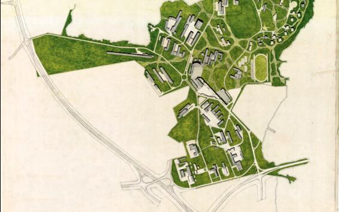
- nasce da pochi orientamenti e curve iniziali,
- ma negli anni cresce, si amplia, ruota,
- mantenendo sempre la sua identità organica.
Il campus di Otaniemi rappresenta uno dei casi più raffinati di progetto “a campo” del Novecento: un sistema insediativo capace di trasformarsi nel tempo mantenendo una coerenza interna riconoscibile. Aalto non definisce una forma-matrice rigida, ma un insieme di direttrici morbide, curvature topografiche e assialità interrotte che operano come struttura generativa, non come griglia prescrittiva. Sin dall’inizio, il progetto si fonda sull’idea che la forma del campus non debba essere fissata, ma resa estensibile, capace di accogliere variazioni e ampliamenti senza perdere la propria identità.
La visione originaria — sviluppata da Alvar e Aino Aalto nel 1949 — nasce in stretta continuità con il paesaggio naturale: la disposizione degli edifici risponde ai boschi esistenti, alle pieghe del terreno, ai viali storici della tenuta. Gli edifici principali, come l’iconico auditorium a ventaglio (1964–1974), non impongono un ordine, ma contribuiscono a un campo relazionale fatto di complementarità e differenze, dove ogni nuovo intervento trova una posizione non per allineamento geometrico, ma per affinità di comportamento con il sistema complessivo.
Il progetto originale riflette inoltre la cultura urbanistica del dopoguerra, privilegiando ampie distanze tra gli edifici e una mobilità fortemente centrata sull’automobile. Tuttavia, questa impostazione non compromette la struttura profonda del campus: la sua logica non è tipologica, ma direzionale. Proprio questa natura “aperta” ha reso possibile, decenni dopo, la trasformazione di Otaniemi in un campus urbano più denso, pedonale, interdisciplinare e sostenibile, senza smarrire il carattere organico del disegno iniziale.
La forza critica dell’opera sta nella capacità di coniugare continuità e trasformazione. Le direttrici stabilite da Aalto non prescrivono la forma, ma definiscono un campo di possibilità entro cui costruire. Gli interventi successivi non imitano la lingua di Aalto: ne riconoscono il sistema di relazioni e lo reinterpretano, rendendo il campus un ecosistema dinamico, capace di evolvere mantenendo intatta la sua identità. Otaniemi dimostra così come un progetto possa essere pensato non come un oggetto concluso, ma come un organismo aperto, un campo evolutivo che armonizza stabilità e mutamento.
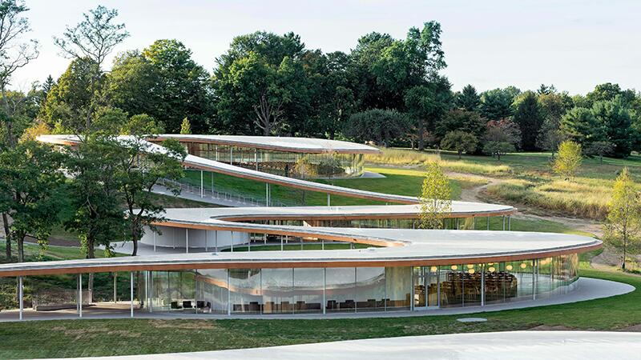
Il River Building di SANAA è uno dei casi più chiari in cui l’idea di campo spaziale continuo diventa principio generatore dell’architettura. L’edificio non si presenta come un insieme di volumi distinti, ma come una singola superficie ondulata che si distende sul terreno di Grace Farms seguendone le pendenze, rallentando, piegandosi e riemergendo come un nastro leggerissimo. Questa copertura — più paesaggio che tetto — è l’elemento strutturante del progetto: definisce direzioni, quote, relazioni, molto più dei padiglioni chiusi che ospitano le funzioni.
L’architettura nasce dalla volontà di integrare il costruito nel paesaggio senza produrre un oggetto autonomo. La lunga linea serpentina scivola tra prati, boschi e stagni, trasformandosi in un sistema di spazi trasparenti collegati da un’unica figura. Le facciate sono composte da pannelli di vetro curvo a tutta altezza, che eliminano ogni gerarchia tra interno ed esterno: la luce, le stagioni e la topografia diventano parte attiva dell’esperienza. Il tetto, sostenuto da sottili elementi in legno lamellare e rivestito in alluminio, sembra fluttuare a pochi metri dal suolo, accentuando la leggerezza del campo.
Il progetto funziona come una sequenza continua di “stagni programmatici” — anfiteatro, biblioteca, sala comune, palestra, padiglioni minori — inseriti sotto la stessa linea di copertura. Le funzioni non sono separate da volumi indipendenti, ma immerse in un flusso spaziale che le mette in relazione reciproca. Il movimento del visitatore non è mai puramente distributivo: è una esperienza atmosferica, un attraversamento che rende percepibile il legame tra corpo, luce e terreno.
Dal punto di vista disciplinare, il River Building mostra come un campo possa essere deformabile e tuttavia coerente. Le curvature della copertura non generano un’immagine frammentata: al contrario, rendono leggibile l’unità complessiva. SANAA dimostra che la continuità non è un fatto estetico, ma un dispositivo relazionale che permette all’architettura di assorbire differenze — variazioni programmatiche, topografiche e percettive — senza perdere identità.
In questo senso il progetto anticipa un modo di progettare non centrato sulla tipologia, ma su logiche ecologiche e adattive: l’edificio non si sovrappone al paesaggio, ma lo interpreta; non chiude funzioni in contenitori, ma costruisce una rete di relazioni che le tiene insieme; non impone una forma, ma propone un campo evolutivo, un organismo che può crescere e mutare mantenendo la propria coerenza interna.
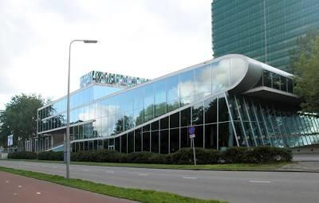
- i piani scorrono, si piegano, salgono, scendono,
- il campo è dinamico ma sempre unitario,
- nonostante le trasformazioni di quota e inclinazione,
- l’identità del sistema rimane riconoscibile e coerente.
L’Educatorium dell’Università di Utrecht rappresenta uno dei momenti più avanzati della ricerca di OMA sulla costruzione dello spazio come paesaggio artificiale, dove la forma non deriva dalla somma di volumi, ma dalla deformazione controllata di superfici continue. L’edificio nasce dall’intersezione di due grandi piani — uno più rigido, l’altro più fluido — che si piegano, scorrono e si sovrappongono generando un campo spaziale unitario. La piega non è un gesto plastico: è il dispositivo che permette alla forma di incorporare percorsi, funzioni e relazioni senza frammentarsi.
I due piani costruiscono un’unica traiettoria che assorbe la totalità dell’esperienza universitaria: dall’ingresso alla socializzazione, dalle aule alla caffetteria, fino alle sale d’esame. Nei punti in cui la superficie sale o si inclina, gli spazi cambiano carattere: un piano diventa parete, una copertura diventa pavimento, un auditorium nasce dalla deformazione del soffitto della caffetteria. La distinzione tradizionale tra elementi architettonici si indebolisce e lascia spazio a una logica di continuità geometrica.
La materialità — cemento, acciaio, vetro — non è utilizzata per definire volumi, ma per dare consistenza alle superfici piegate. L’auditorium principale, ad esempio, è formato da una colata di cemento che riveste una struttura d’acciaio, mantenendo la percezione di un’unica superficie continua. La sala d’esame, con il soffitto a griglia di travi a I, enfatizza invece la precisione e la densità strutturale tipica del linguaggio di OMA. Anche la sostenibilità passiva (raffrescamento notturno, tetti verdi) è integrata nella logica del campo e non aggiunta come tecnologia esterna.
Il valore critico dell’Educatorium risiede nella capacità di mostrare che la complessità programmatica non richiede la moltiplicazione degli oggetti, ma può essere assorbita da un campo deformato, in cui le superfici generano spazi attraverso il loro movimento. Koolhaas non organizza le funzioni per compartimenti, ma le lascia emergere come episodi di una stessa continuità. L’edificio diventa così una figura non tipologica: un’infrastruttura esperienziale in cui muoversi significa attraversare una serie di transizioni spaziali che rivelano la logica interna del progetto.
In questo senso, l’Educatorium è uno dei paradigmi della progettazione “a campo” degli anni Novanta, anticipatore dello smooth space: uno spazio non gerarchico, non suddiviso, nel quale differenze funzionali e percezioni si stratificano senza interrompere l’unità generale. Le pieghe non dividono: articolano. Le inclinazioni non separano: orientano. La continuità non elimina la complessità: la rende leggibile.
Verificare il campo strutturale:
pianta, sezione, modello come strumenti critici
L’architettura non è una teoria, ma una pratica che si verifica nel confronto con i suoi strumenti. La coerenza di un campo si costruisce mettendo alla prova le ipotesi attraverso la rappresentazione: pianta, sezione e modello non illustrano, ma interrogano. Ogni strumento rivela aspetti diversi della composizione e ne definisce la tenuta strutturale.
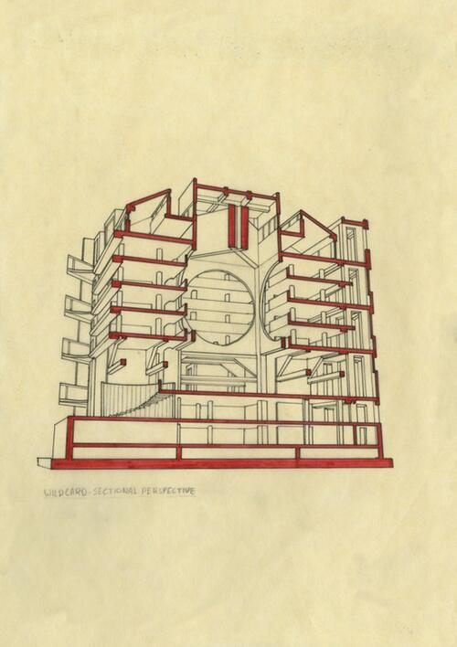
- la pianta verifica la logica delle relazioni e delle gerarchie;
- la sezione verifica la coerenza tra vuoto, luce e struttura;
- il modello verifica la consistenza tridimensionale del campo;
- la forma non è un gesto, ma la risultante di forze, funzioni e comportamenti;
- non si capisce dalla sola pianta,
- non si capisce dalla sola sezione,
- si comprende solo incrociando entrambi.
Pianta, sezione e modello come verifica del campo strutturale
La Biblioteca di Exeter è uno dei casi più chiari in cui la forma architettonica coincide con la struttura del campo, rendendo leggibile in ogni rappresentazione — pianta, sezione, modello — la stessa identità spaziale. L’edificio non si fonda sulla somma di parti, ma sulla relazione necessaria tra un vuoto centrale, un anello strutturale e un perimetro abitato: tre dimensioni del progetto che non esistono isolatamente, ma come dipendenze reciproche.
In pianta questa logica appare con particolare precisione. Il grande vuoto centrale, perfettamente definito, organizza l’intero campo: non è solo uno spazio libero, ma il fulcro percettivo e distributivo dell’edificio. Attorno ad esso, l’anello in cemento armato che contiene le scaffalature svolge un ruolo strutturale e sintattico al tempo stesso: tiene l’edificio e ne regola il comportamento interno. Infine, il perimetro in mattoni integra le cabine di lettura illuminate dalla luce naturale, mostrando come la posizione rispetto alla luce definisca la funzione senza bisogno di chiusure rigide. La pianta rivela così la distinzione kahniana tra spazi “serviti” e “servitori” e, soprattutto, la coerenza del campo come sistema di dipendenze.
Se la pianta chiarisce la logica orizzontale, la sezione rende evidente la necessità della forma. L’atrio centrale, alto oltre venti metri, non è un gesto monumentale ma la conseguenza diretta della struttura: le pareti in cemento, con le aperture circolari, disegnano un volume continuo che ascende fino al lucernario zenitale. La luce dall’alto non ha un ruolo decorativo: è l’elemento che ordina il vuoto e ne stabilisce la gerarchia, rendendolo il “centro” non solo visivo ma strutturale dell’edificio. Ogni livello si affaccia su questo spazio, confermando la forza della relazione tra gravità, luce e comportamento dello spazio. La sezione dimostra ciò che la forma è vera quando è necessaria, quando ogni scelta appare come inevitabile esito delle relazioni interne.
Il modello, infine, permette di verificare la coerenza tridimensionale del campo. Anche nella sua versione più astratta — un cubo di laterizio che custodisce un vuoto scavato e luminoso — l’edificio mantiene la sua identità. Il perimetro massivo, l’anello strutturale e il grande vuoto centrale si leggono istantaneamente, senza equivoci. Questo mostra come la struttura non sia un supporto nascosto, ma la matrice stessa della forma: l’edificio “vuole essere” così, perché solo così le sue relazioni interne possono reggere. Il modello conferma che la forma di Exeter non dipende dal dettaglio, ma dalla coerenza del campo che la genera.
La biblioteca della Phillips Exeter Academy è dunque un esempio canonico per comprendere come pianta, sezione e modello non siano rappresentazioni diverse, ma strumenti critici che mettono alla prova la stessa logica strutturale. In Exeter, ogni documento restituisce la stessa immagine disciplinare: un campo organizzato da un vuoto gerarchico, da una struttura coerente e da una distribuzione che non è mai arbitraria. Per questo l’edificio mostra che la forma non si inventa, ma si verifica; non si costruisce dall’esterno, ma emerge dalla necessità interna di un sistema di relazioni.
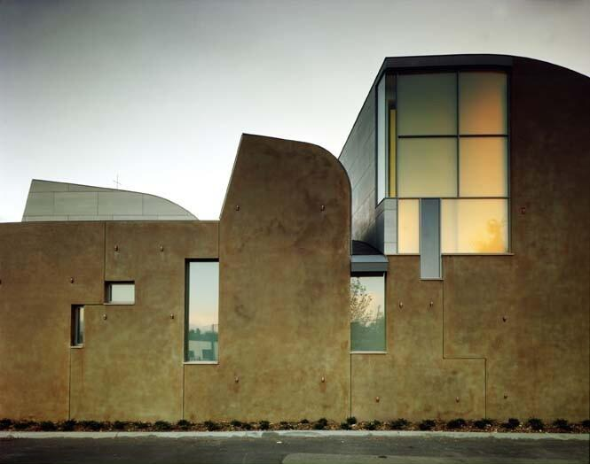
La Cappella di Sant’Ignazio rappresenta uno dei momenti più alti della ricerca di Steven Holl sulla luce intesa non come elemento accessorio, ma come principio generativo del campo architettonico. L’edificio nasce da un’idea estremamente semplice e al tempo stesso radicale: una “scatola di pietra” che accoglie sette bottles of light, ognuna delle quali corrisponde a una diversa qualità luminosa. La forma finale non è disegnata a priori: emerge dalla verifica fisica della luce attraverso modelli, prove, simulazioni, piccoli dispositivi costruiti per comprendere come la luce potesse comportarsi nello spazio. In questo senso, la cappella di Holl è un esempio paradigmatico della lezione 4: la forma nasce testando il campo, non tracciandolo sulla carta.
Il punto di partenza del progetto è un modello concettuale — il light model — che Holl sviluppa come strumento critico, non come semplice oggetto di studio. I modelli fisici costruiti dallo studio sono veri e propri laboratori di comportamento atmosferico: ogni volume luminoso viene orientato, inclinato, perforato, colorato per verificare come la luce possa entrare, riflettersi, diffondersi, concentrarsi. La forma dei volumi superiori, le loro proporzioni e i loro tagli non sono scelte compositive, ma conseguenze dirette della luce: sono geometrie trovate, non inventate. La presenza di uno di questi modelli nella collezione permanente del MoMA testimonia il ruolo decisivo che il modello fisico ha avuto nella definizione dell’opera.
Nello spazio costruito questa logica si traduce in una sequenza di episodi luminosi che governano la percezione e il comportamento dell’utente. Ogni “bottiglia” cattura e modula la luce secondo direzioni diverse: fasci obliqui che attraversano l’aula liturgica, lame colorate filtrate da vetri fusi, superfici intonacate che restituiscono gradienti cromatici, riflessi provenienti dalla piccola vasca d’acqua. La cappella non è un volume illuminato, ma un campo atmosferico in cui la luce genera densità differenti, orienta i movimenti, costruisce gerarchie, rivela il senso di ogni porzione di spazio. La luce diventa struttura prima ancora che fenomeno.
Il contrasto con l’esterno rafforza questa lettura. La scatola ortogonale in cemento, opaca e compatta, stabilisce una condizione di sospensione: uno spazio severo che non anticipa nulla dell’esperienza luminosa interna. Non si tratta di un artificio retorico, ma di un vero e proprio dispositivo percettivo: il passaggio dalla massa al campo, dall’opacità al flusso luminoso, produce uno scarto sensoriale che rende leggibile la logica del progetto. L’interno dimostra che la forma non è un involucro, ma il risultato di una configurazione fenomenologica costruita attraverso le relazioni della luce con la materia.
La forza critica dell’opera risiede nella capacità di superare la tradizionale opposizione tra astrazione moderna e simbolismo religioso. Holl non impiega simboli riconoscibili, né figure iconografiche; è la luce stessa a generare significato. La spiritualità non è rappresentata: è esperita. Il campo luminoso muta durante il giorno e l’anno, costruendo un tempo proprio che diventa materia liturgica. La cappella si configura così come un luogo in cui l’architettura si fa atto teologico e, allo stesso tempo, esercizio estremamente contemporaneo di progettazione atmosferica.
Per la lezione 4, la Cappella di Sant’Ignazio è un caso esemplare perché mostra in modo diretto che la verifica del campo non passa soltanto da pianta, sezione o modello tridimensionale, ma anche — e in questo caso soprattutto — dalla costruzione di un dispositivo fenomenologico. Il “light model” è un test del comportamento dello spazio; la luce è il vero elemento strutturale; la forma emerge come esito inevitabile delle verifiche, non come intuizione formale. È l’architettura che diventa esperienza critica, prima ancora che oggetto costruito.
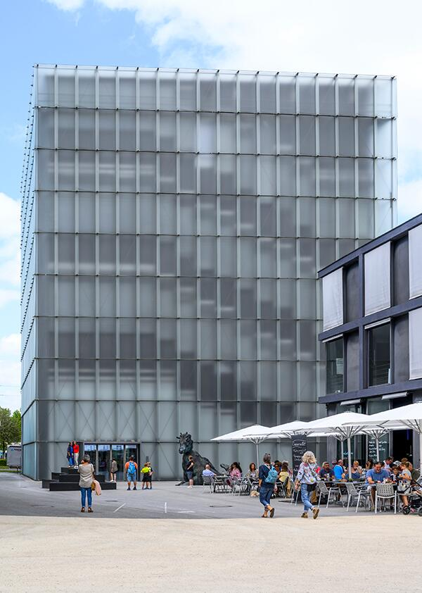
- il modello verifica la diffusione della luce,
- la sezione verifica la stratificazione materica,
- la pianta verifica la coerenza dei livelli,
- solo il dialogo tra tutti questi strumenti rivela il campo reale.
Il modello atmosferico come verifica del campo: costruire la forma attraverso luce e materia
Il Kunsthaus Bregenz è uno dei progetti in cui più chiaramente emerge la concezione di Zumthor del modello fisico come strumento critico primario, capace di orientare il progetto più della rappresentazione grafica. I modelli sviluppati per il KUB non sono infatti maquette descrittive, né riduzioni oggettuali dell’edificio, ma veri dispositivi atmosferici: sculture architettoniche che testano la densità della luce, la risonanza dei materiali, la proporzione dei volumi e la loro capacità di generare un campo percettivo coerente. Prima che il progetto assumesse forma definitiva, è attraverso questi modelli — fatti a mano, stratificati, cesellati, letteralmente “costruiti come l’edificio” — che Zumthor verifica quale tipo di esperienza lo spazio potesse sostenere.
La ricerca sul Kunsthaus nasce da un’intuizione centrale: immaginare l’edificio come una lampada urbana, un corpo che assorbe e riflette la luce del lago, del cielo e dell’ambiente costiero. La trasparenza calibrata delle facciate, la doppia pelle di vetro acidato, la massa silenziosa del calcestruzzo interno sono prima di tutto risultati del lavoro sui modelli. Zumthor studia come la luce penetri, venga diffusa, catturata, riflessa, attenuata: il modello atmosferico gli permette di anticipare ciò che i disegni non possono restituire — il comportamento del campo luminoso nella sua relazione con la materia.
Questi modelli non hanno una funzione figurativa. Non mostrano “come sarà l’edificio”, ma come si comporterà. Testano la risonanza dei materiali, la loro temperatura percettiva, la loro opacità o translucenza. Testano la proporzione tra pieno e vuoto, lo spessore delle superfici, la distanza tra le lastre di vetro, la presenza o assenza di elementi intermedi. Testano, soprattutto, l’atmosfera: l’effetto complessivo di luce, peso, superficie, risonanza acustica, densità dell’aria. È da questa verifica — da questo continuo aggiustamento sensoriale — che emerge la forma finale.
Il ricorso sistematico al modello atmosferico produce un’architettura in cui l’onestà materica non è un principio morale, ma un metodo conoscitivo. Ogni modello espone apertamente il modo in cui è costruito, così come l’edificio finale espone la propria anatomia: il calcestruzzo a vista, il vetro non decorato, l’acciaio in funzione strutturale. Nulla è nascosto, perché nulla è superfluo. La forma è l’esito diretto della relazione tra materiali e luce, non una scelta compositiva autonoma.
Il Kunsthaus Bregenz mostra così come il modello possa diventare strumento per verificare il campo architettonico: non un oggetto da osservare, ma un luogo da sperimentare. Le molte varianti costruite e conservate negli archivi del KUB — alcune delle quali esposte in mostre dedicate, tra cui la Biennale di Venezia — rivelano un processo iterativo in cui ogni modello corregge il precedente, affinando progressivamente la struttura luminosa e la sua capacità di interagire con il paesaggio lacustre.
Nel contesto della lezione 4, il progetto di Zumthor è esemplare perché mostra che la pianta e la sezione non bastano a verificare la forma di un campo complesso: è necessario un dispositivo tridimensionale che permetta di sentire lo spazio prima che venga costruito. Il Kunsthaus non nasce da una geometria preliminare, ma dalla sedimentazione di test atmosferici che definiscono la forma come risonanza materiale della luce. È un edificio che non rappresenta nulla, ma presenta un’esperienza: quella di una materia illuminata dall’interno, calibrata attraverso il modello come strumento critico.